In this assignment, I learned how to implement Bezier curves and triangle meshes to create images using formulas I was taught in class and within the spec. For the Bezier curves, I used de Casteljau's algorithm, which essentially repeatedly applies linear interpolation on points that are next to each other to create another intermediate set of points that then loops through again using the new set of points. To extend it to surfaces for Bezier, I evaluated each of the rows supplied, making one set of resulting points that can then be put through the algorithm one more time to finish it off.
Moving onto the next section, I began implementing triangle meshes and half edge data structures with area-weighted vertex normals. Taking from nearby triangles, I calculated the cross product between all of the triangles and then added the values together. The end result from that step is normalized to return what is needed for area-weighted vertices. Edge flips were next on the list; first, I got two specific half edges and then made sure that they weren't boundaries, as those are not allowed to be flipped. I then got the other half edges, faces, and vertices that I needed to properly set the neighbors to rearrange the values and apply them so that the edge flips.
Edge splits had a similar kind of work flow to edge flips, except I had to find the middle point that would help determine where to split the edge at. I still used setNeighbor to determine how to update the neighbors with the necessary half edges, faces, and edges. Lastly, I got loop subdivision to work by calculating new positions using the original vertices and edges as a reference point. I would loop through the vertices ad edges to check which values I should be updating, and then looped one final time to update all of the positions. Through this implementation, I found that subdivision helps smooth out points, but some splitting beforehand can help with keeping a shape symettrical.
Throughout the entire project, I had many issues keeping track of certain values because of the amount of them that were necessary to carry out this project. Regardless, through multiple tries at debugging the code and checking the behavior of the code after, I was able to get to the result that I needed to. Despite all of the holes and crashes that I encountered, I would go back to the drawing board and figure out what the issue was and attempt to fix it. Through this project, I learned how to properly implement Bezier curves and triangle meshes through myriad algorithms and formulas I learned in class, as well as a severe amount of patience going through and checking every last detail to ensure the code worked.
De Casteljau's algorithm essentially configures Bezier curves by finding the linear interpolation repeatedly between two points that are next to each other. It also takes in a parameter t that can change the location of where the points are evaulated. Every time a step is evaluated, there is a new set of points that help illustrate where the curve would end up using the points given. The process takes away a point until 1 remains, which is the center point for the Bezier curve.
To implement this I create a vector called result to store the points. After that, I looped through each pair of neighboring points and used the formula provided for linear interpolation to calculate the values needed to input into the vector. The vector is then returned to be used for further calculations.
|
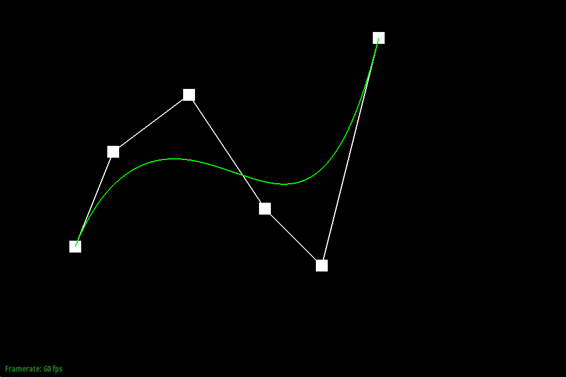 |
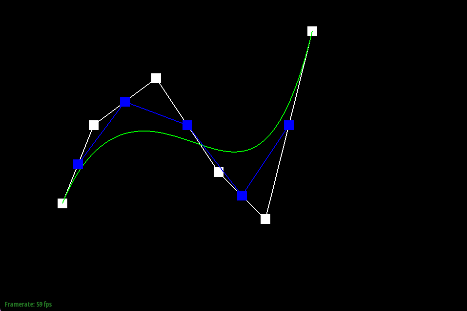 |
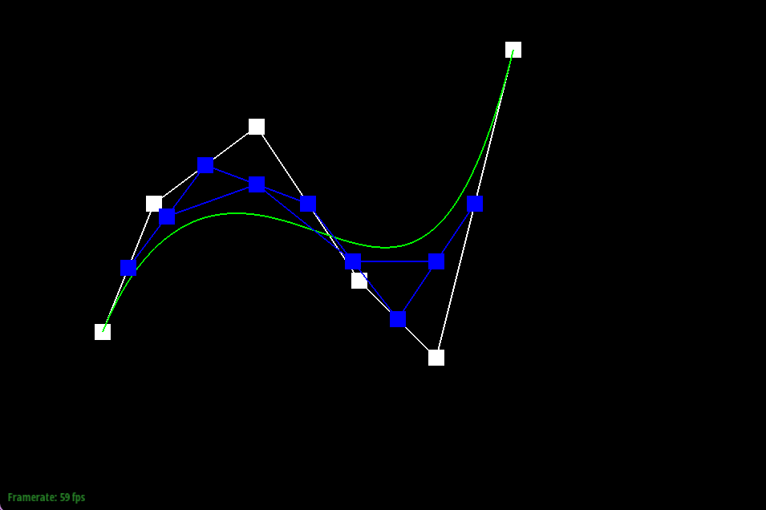 |
|
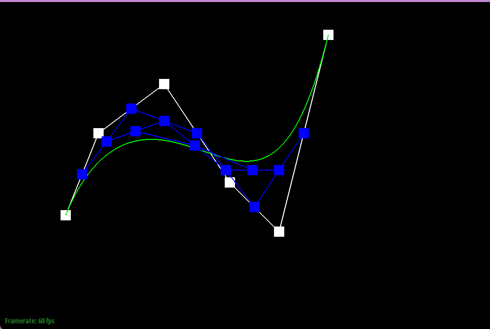 |
|
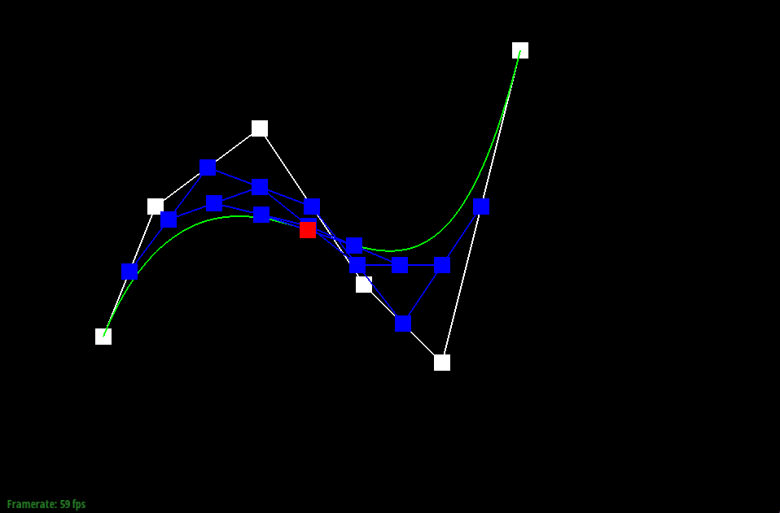 |
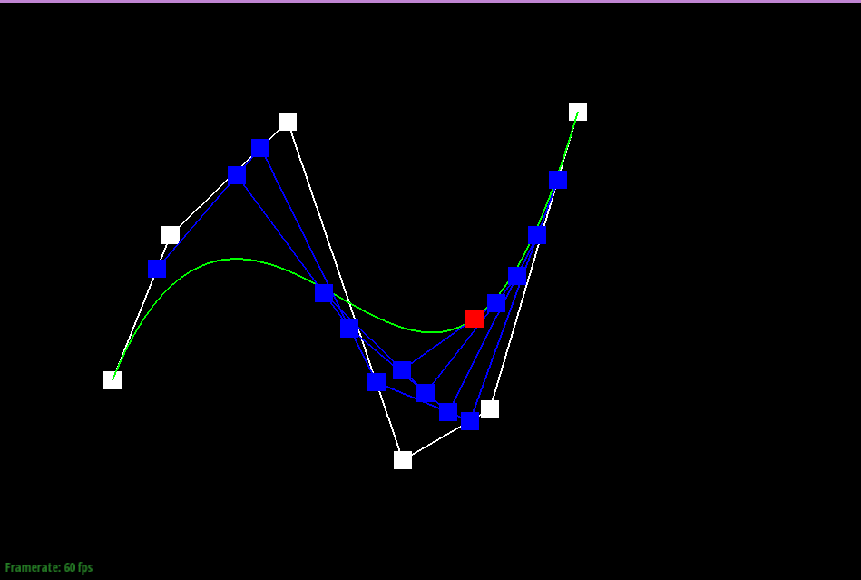
De Casteljau algorithm extends to Bezier surfaces by using the 1D algorithm for the surface. First, I take the control points supplied and evaluate them using a similar format to part 1, but this time it recurses through many steps to solve a point for each row provided. After all of these rows are evaluated, the points leftover are a part of a new Bezier curve, which is then evaluated once more using the 1D algorithm to get the point that is meant to be on the surface.
To explain further, evaluateStep followed the same format as part 1's version. The function evaluate1D simply kept stepping through until it got to 1 point. Lastly, evaluate took the evaluate1D and used it for each row to make a new curve that was then put through the ringer one more time to get the final point.
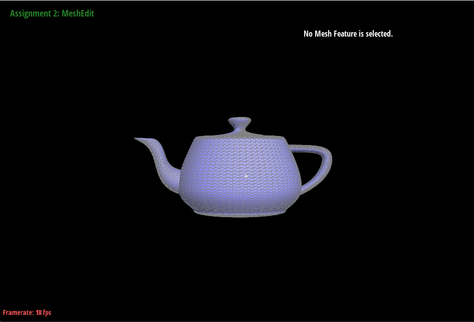
Using the halfEdgeMesh code as a reference, I implemented area-weighted vertex normals by going through all the triangles around the vertex using the half-edge feature. Each triangle had the cross product calculated from the two edges using the positions from their vertices to get a perpendicular vector. These vectors added onto each other into one normal value. After the loop, I normalized the entire sum to get the value that I returned from the function.
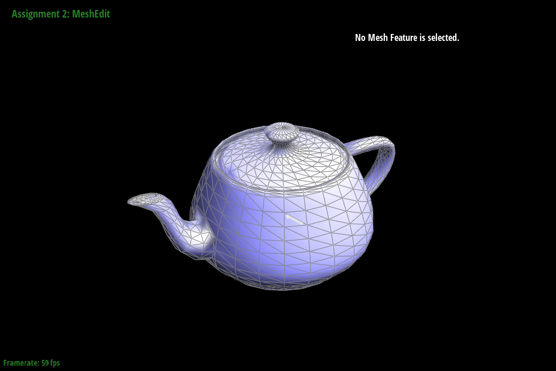
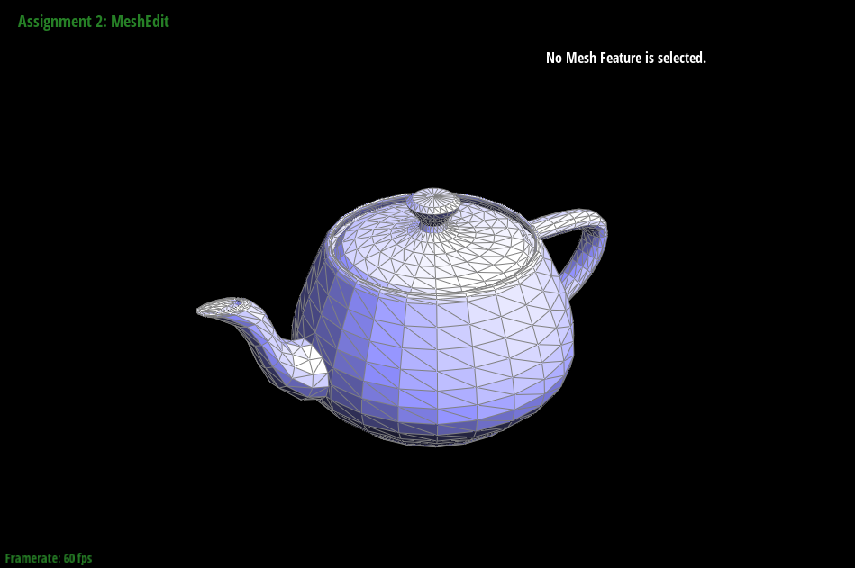
To implement the edge flip operation, I first got the half edges relative to the boundary and checked whether or not they are boundaries. If they are, I just return the edge iterator provided because they should never flip. After that, I initialize the other half edges necessary to flip the edge properly.
I also get the faces and vertices that will be useful for setting the neighbors to become the new flipped triangles. Each half edge points to the vertex at the starting end, so I used this knowledge to implement the set neighbors function. I update the values properly so that the triangles are then flipped.
After changing those pointers, I updated the half edge pointers for the faces and vertices, as well as the e0 half edge pointer. I return the same edge provided because now the values are updated and should work properly when flipping, since that edge still exists within the mesh.
Tracking the values was overwhelming during this part, which resulted in many mistakes and many holes being implemented into the mesh instead of flipping the edges. Every time I thought I fixed the issue, a hole would still pop up and I would have to go back to the drawing board. Regardless, it definitely taught me how to implement these values and how complicated a flip may be when coding it.
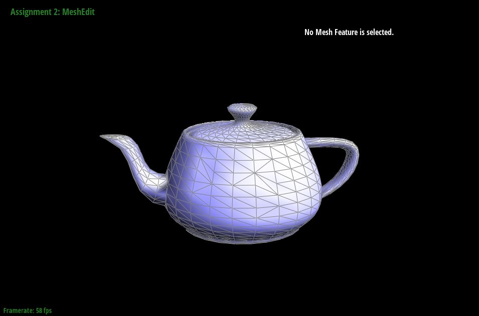
To implement splitEdge, I followed a similar pattern to part 4 for the first part and then used other variables for the second part. The first part gets six half edges and two triangles with their vertices and positions. I checked if the faces were boundaries, and then returned without splitting anything.
For an interior edge, I made a new vertex in the center. Around that center, I made edges, half edges, and faces necessary to build the split. Once those were initialized, I updated the values with setNeighbors and the pointers accordingly to properly store the faces, edges, and vertices needed for the function work properly.
I had to deal with many crashes during this portion, as I forgot some portions while implementing this part of the code. I would constantly mix up the values or have one variable in the wrong spot that would mess it all up. Even still, I would end up with holes sometimes that would cause me to have to debug even more. Eventually, I came to the correct implementation, but it took a long time to figure out what I did wrong.
|
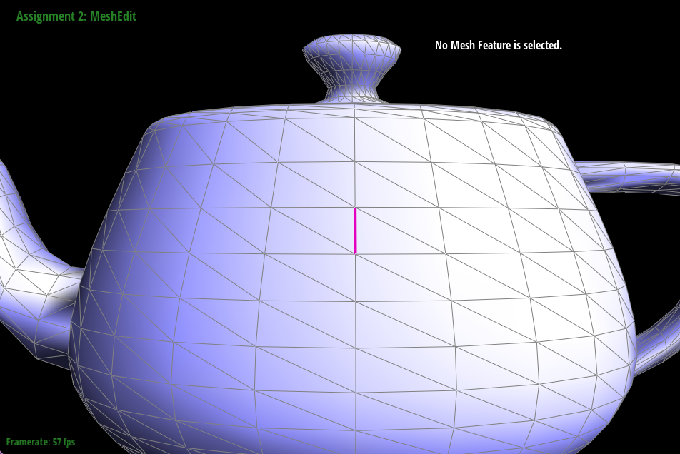 |
|
|
|
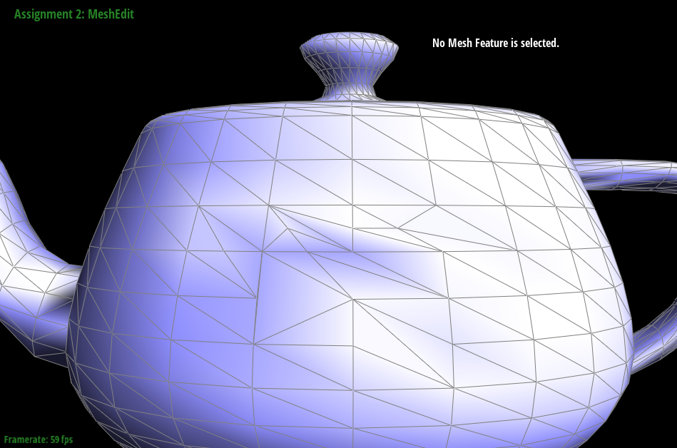 |
To implement loop subdivision, I first got the values of all the original vertices and edges before reimplementing the mesh. For each of the vertices, I used the nearby vertices to get the new position with loop subdivision. Then each edge has to calculate a new position through the endpoints and opposite vertices of the triangles adjacent to it.
After this, I split every edge and placed the new vertex onto its position. I marked the edges so I could tell the difference from those edges and the original ones that I found earlier. Afterward, I flipped the new edges only to get the connections needed.
Afer each iteration of loop subdivision, the mesh continued to get smoother as the triangles got smaller. The sharp corners eventually faded away and became more rounded as the vertices moved toward the weighted average. I could reduce this effect through pre-splitting edges, as adding more triangles by a corner will help give more vertices to work with in that corner. The sharpness of the corner may not retain itself, but it will keep the general shape more likely than not.
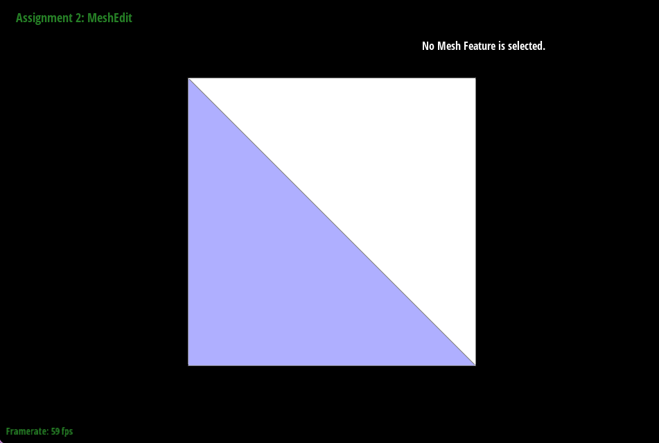
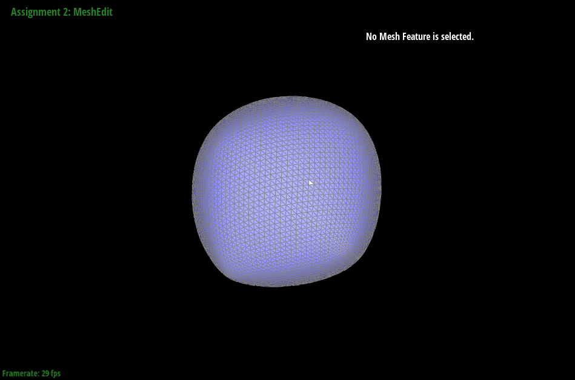
I can pre-process the cube with edge flips/splits so that the cube subdivides symettrically. What I did was split every edge cutting up each square into four equal pieces, so that the triangles even out and create a shape that was more symettric. Through this, vertices on opposing sides of the cube will be treated similarly under the algorithm.
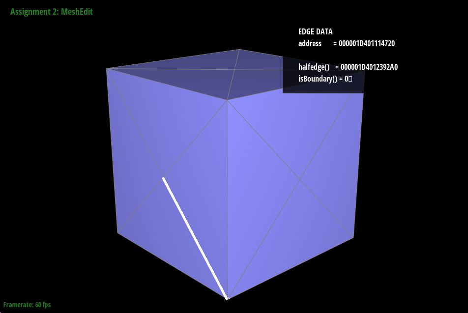
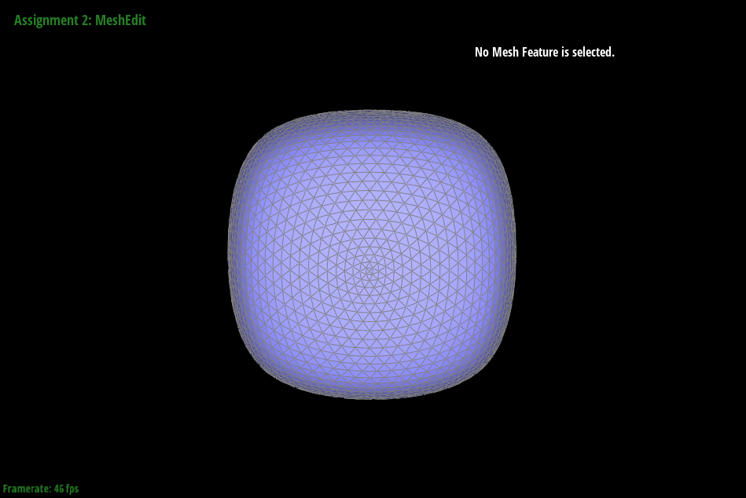